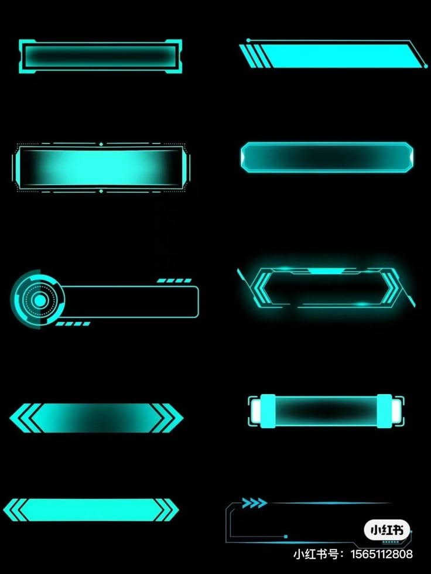

Плюс сверху убираем. Подпись Добавить взлёт, позиция — под аккордеоном крайнего дня, ширина как у аккордеона. Стили сняты с референса. Клик по карточке — смотрите в макете сверху.

Макет в контексте полётной ведомости
Кнопка сидит сразу под последним днём и тянется на всю его ширину.
Варианты с референса · кликните, чтобы выбрать
Выбран: —. Напишите в чат букву (A–H), чтобы внедрить в кабинет.